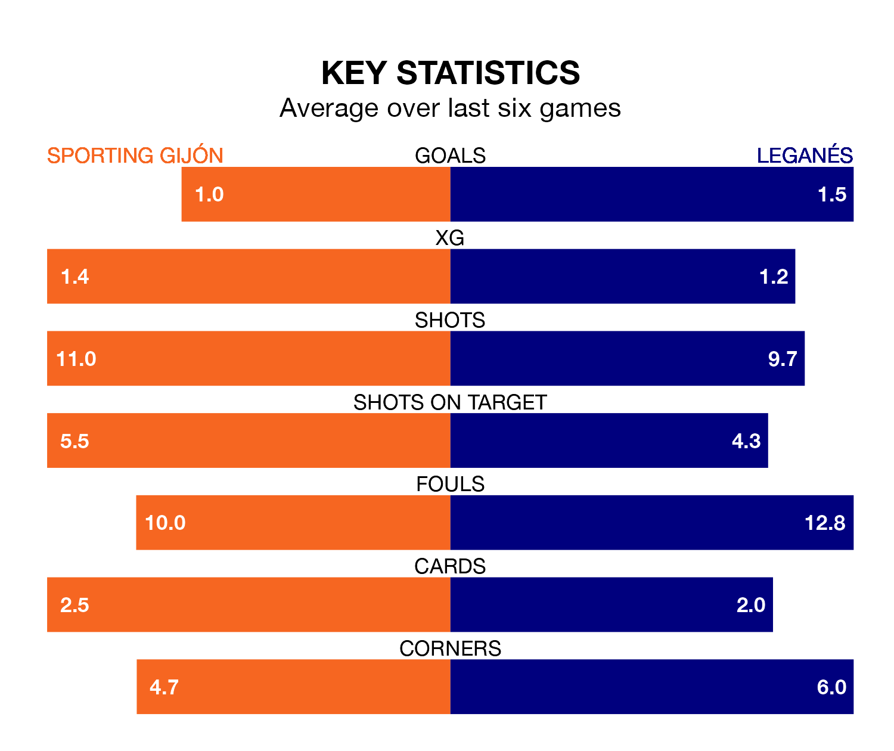

Two of the Segunda División's top sides face each other at the Estadio Municipal El Molinón in Saturday's late kick-off, when third-placed Sporting Gijón host table-topping Leganés.
Sporting have picked up nine wins and six draws from 19 games so far this season, and sit four points below the visitors going into the 5.30pm match.
Leganés, meanwhile, have won 11 and drawn four, picking up 37 points.
With 29 goals in 19 games so far this season, Leganés are scoring more than average in the league with 1.5 goals per game. And they are conceding fewer than average, letting in 11 goals at a rate of 0.6 per game.
Sporting are also above average scorers, with 1.3 goals per game, compared to a league average of 1.2. They have conceded 0.7 goals per game.
In Orlando Rubén Yáñez Alabart, Sporting Gijón can rely on one of the league's safest pair of hands. He has kept 10 clean sheets in his 19 appearances this season, and no 'keeper has prevented the opposition scoring more often in the Segunda División.
In the visitors' net, Diego Conde has eight clean sheets in 17 games.
In the last five years, Sporting and Leganés have played each other on six occasions. They won one each, and they drew four times.
On average, Sporting Gijón scored 1.0 goal and Leganés 1.0 in those matches.
Their last meeting was on February 4, when Leganés won 1-0 at home.
The home team are in mixed form in the Segunda División, with two wins and three draws from their last six games.
And also with two wins and three draws over that period, Leganés' form is identical – they have both taken nine points from 18.
Sporting's last match was on December 9, a 0-0 draw against Levante UD.
Leganés drew 1-1 with CD Eldense last time out, on Sunday, with Daniel Raba Antolí on the scoresheet.
